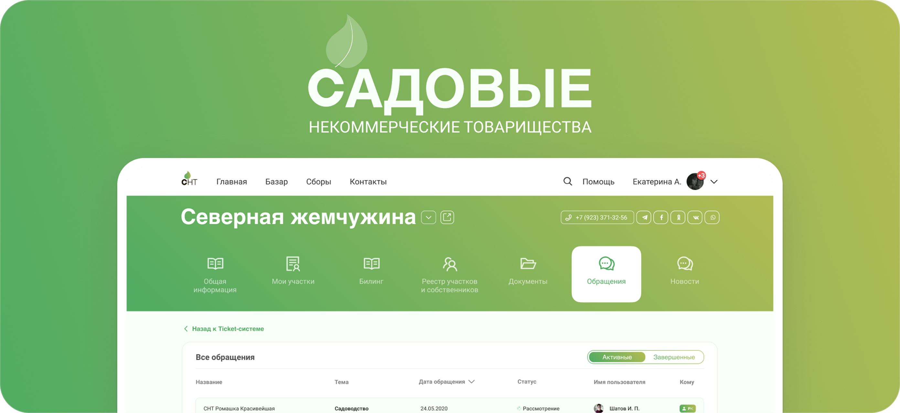
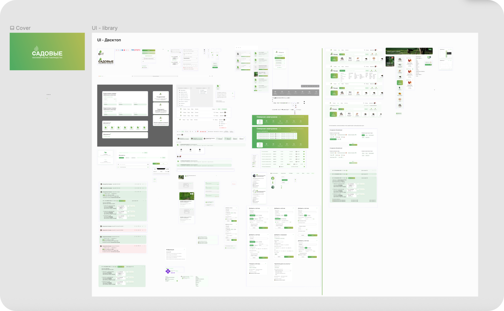
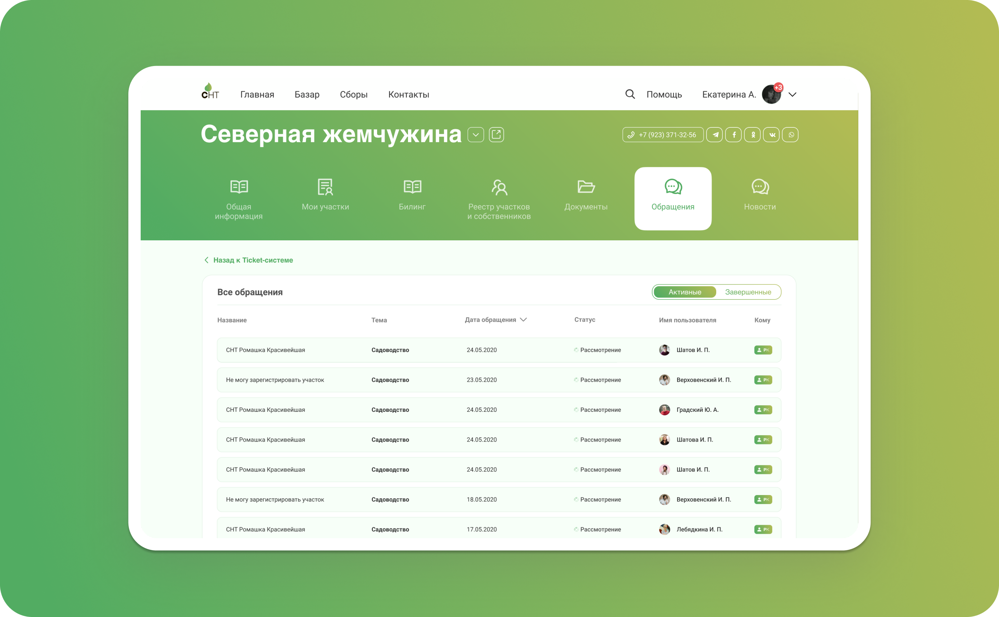
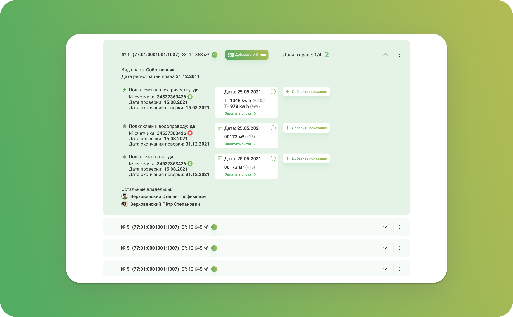
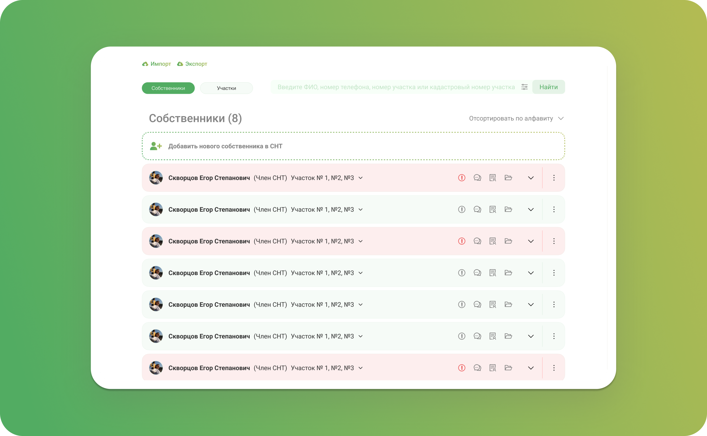
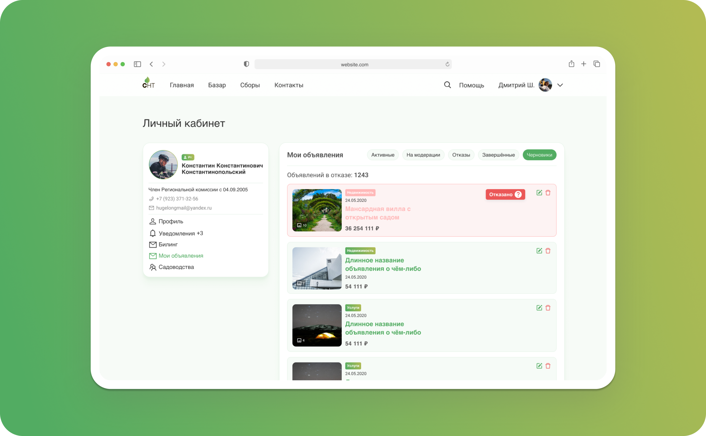
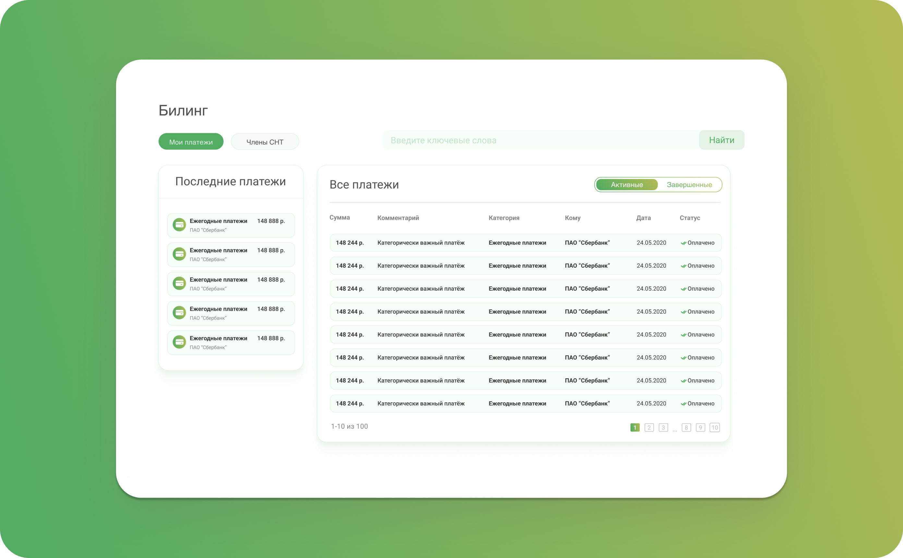
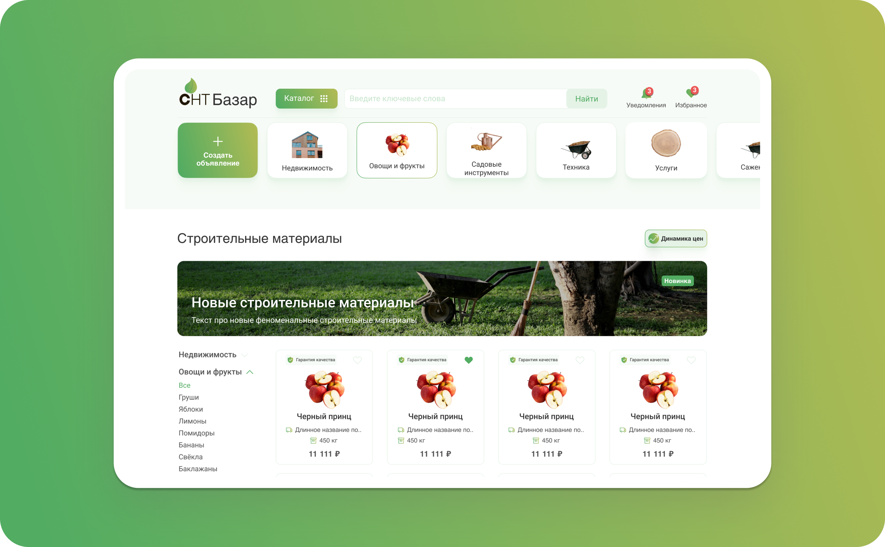

SAAS & GOVTECH
СФЕРА
PRODUCT DESIGNER
РОЛЬ
АВТОПРОТОКОЛ В 1 КЛИК
РЕЗУЛЬТАТ
О ПРОЕКТЕ
Специализированная SaaS-экосистема для цифровизации управления СНТ, объединяющая председателей, бухгалтеров и садоводов в прозрачном юридическом контуре.
Контекст и Проблема
Бизнес-задача: Спроектировать B2B2C SaaS-платформу для автоматизации взносов, голосований и отчетности в садовых товариществах в строгом соответствии с ФЗ-217.
Пользовательская боль: Бухгалтеры тонут в ручных таблицах Excel; жители старше 50 лет испытывают тревогу при онлайн-оплатах и пропускают очные собрания.
Ограничения: Строгие юридические нормы, необходимость максимальной доступности по стандарту WCAG и поддержка устаревших браузеров.

Приоритизация и Скоупинг
Что намеренно вырезали из MVP: Отказались от внутреннего маркетплейса «СНТ-Базар» и чатов между соседями, сфокусировавшись на безупречном биллинге и юридически чистых голосованиях.
Core Loop: Формирование начисления → SMS-уведомление жителю → Быстрая оплата в 2 клика без регистрации → Автоматическая фиксация в реестре и выгрузка чека.


Реализация и UX-Логика
Онбординг и активация: Простой сценарий оплаты по лицевому счету без обязательного создания личного кабинета, крупный шрифт (базовый 16px) и контрастные кнопки.
Ключевые флоу: Понятный конструктор онлайн-голосований с фиксацией кворума и защищенный личный кабинет председателя с выгрузкой отчетов в 1С.
Системность: Выстроили Accessibility UI-кит (контрастность текста по AAA/AA, крупные кликабельные чекбоксы, оптимизация под чтение с экранов телефонов).




Соответствие сформированных протоколов требованиям 217-ФЗ
От перехода по SMS-ссылке до подтверждения оплаты взноса через СБП
Стандарт доступности интерфейса для комфортной работы аудитории 50+
РЕТРОСПЕКТИВА
Что выстрелило: Ставка на предельную простоту мобильного веба и Accessibility UI позволила пожилым садоводам без проблем пройти путь голосования и оплаты на тестах.
Проработать модуль автоматического считывания показаний электросчетчиков по фото с камеры смартфона.